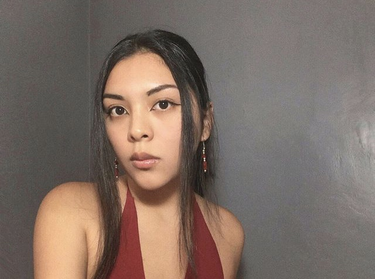

Información Personal
¡Hola! Soy Noriko Shin, tengo 24 años y estudio Publicidad y Marketing Digital en Toulouse Lautrec. Me considero una persona proactiva y bastante organizada en las cosas que realizo, muy organizada diría yo, es la base de mi día a día y considero que estos valores me ayudaron bastante a desarrollarme personal y profesionalmente en la actualidad. 
Información Profesional
Acerca de mi perfil profesional, mi experiencia previa trabajando en una agencia de marketing digital, me ha permitido desarrollar aptitudes como el trabajo en equipo, resolución de problemas bajo presión y comunicación eficaz. Además, cuento con certificaciones como la de Google Analytics y Google Ads (Campañas de Búsqueda y Display), totalmente actualizadas.

Misión "Coffee"
La misión que podemos apreciar a continuación, fue la que realicé con mi grupo en la clase presencial de Laboratorio de Innovación 2. Se llama "Coffee", es un café andante, ya que a nosotras nos encanta el café a toda hora del día, es una bebida básica y esencial en nuestras vidas, por ello, nos sentimos totalmente identificadas. Además, se puede observar en el dibujo, las iniciales de cada integrante del grupo.